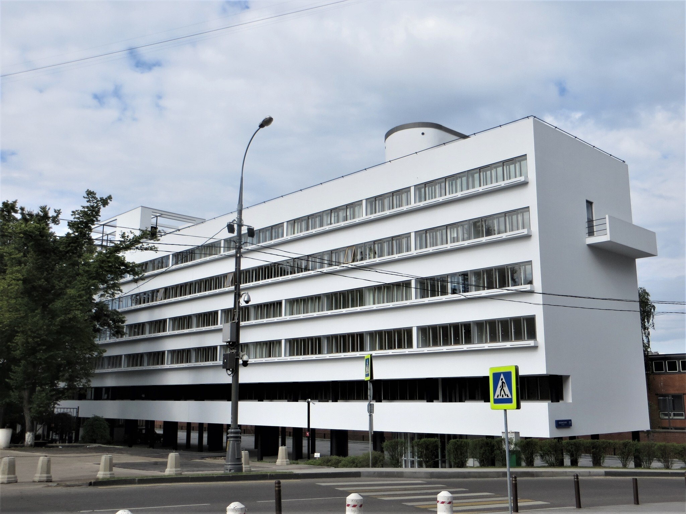

Дом Наркомфина
Дом Наркомфина — один из знаковых памятников архитектуры советского авангарда и конструктивизма. Построен в 1928—1930 годах по проекту архитекторов Моисея Гинзбурга, Игнатия Милиниса и инженера Сергея Прохорова для работников Народного комиссариата финансов СССР (Наркомфина).
С начала 1990-х годов, дом находился в аварийном состоянии, был трижды включён в список «100 главных зданий мира, которым грозит уничтожение».
История создания дома Наркомфина
Из всех различных индивидуумов и групп, занимавшихся реформированием повседневной жизни и консолидации социализма в 1920-е годы архитекторы занимали исключительное положение. Архитектурная инновация Дома Коммуны представляет наиболее полную попытку осуществления реформирования быта и консолидации советского социализма.
Учреждению секции предшествовала работа в 1928 году комиссии Стройкома по отбору типовых проектов жилья для строительства. Комиссия пришла к выводу, что большинство известных на тот момент проектов не могут быть использованы как типовые, поэтому для разработки типовых проектов была создана Секция типизации. Подготовкой для работы над новым форматом жилья также стала работа над домом Госстраха на Малой Бронной (1926—1927, М. Я. Гинзбург и В. Н. Владимиров) и конкурс на «эскизный проект жилого дома трудящихся», проведённый журналом «Современная архитектура» (Гинзбург подал на конкурс проект «Коммунального дома А-1»). Выставка проектов конкурса состоялась в июне 1927 года.
Заказчиком жилого комплекса выступал нарком финансов РСФСР (1924—1929) Н. А. Милютин, известный как автор схем социалистического расселения и градостроительных концепций соцгорода, он же определил функциональные характеристики будущего здания. Сотрудничество наркома Н. А. Милютина и архитектора М. Я. Гинзбурга началось несколько раньше, на строительстве дома Госстраха (1926—1927), — Милютин был инициатором строительства двух домов Госстраха в Москве. Идеи Н. А. Милютина об устройстве жилища воплотились при создании дома Наркомфина (Дома-парохода, или 2-го дома СНК).
Усиление влияния промышленных работниц на широкие массы трудящихся женщин, рост активности работниц, поднятие их классового самосознания и культурного уровня требуют дальнейшего увеличения женского труда на производстве. Принятый пятилетний план народного хозяйства обеспечивает огромный рост промышленности на базе реконструкции и социалистической рационализации, которая в отличие от капиталистической рационализации, основанной на эксплуатации рабочей силы, даёт возможность без ущерба для функций материнства расширять применение женского труда в производстве, в том числе и в тяжёлой индустрии.
Идеология
Дом Наркомфина переходного типа (от «буржуазного дома» к «социалистической коммуне») хотя и содержал в себе ранее существовавшие «буржуазные» квартиры, был структурирован таким образом, чтобы облегчить переход индивида к полностью социализированной жизни.
Гинзбург критически оценивал так называемое моссоветовское строительство («массовое жилищное строительство Москвы первых лет после революции»), считал «экономический эффект» доходного дома более высоким.
Секция Стройкома разработала несколько типов квартир-ячеек разного размера, названных буквами от A до F, причём в маленьких ячейках F размещалась душевая кабина, в больших ячейках А ванна. Также был разработан «кухонный элемент» сокращённой площади, закрывающийся складной дверью-ширмой. Кухонные элементы были реализованы в доме на Гоголевском бульваре. Почти все созданные тематические жилые дома так называемого «переходного типа», предусматривали наличие завершённых индивидуальных квартир-ячеек и коммунальных зон для постепенного перехода к новому коллективному образу жизни.
«Мы сочли совершенно необходимым создание ряда моментов, стимулирующих переход на более высокую форму социально-бытового уклада, но не декретирующих этот переход».
Таким образом, называть «коммунальный дом» Наркомфина «домом-коммуной» принципиально неверно, так как дом Наркомфина был примером реализации идей противников идеологии дома-коммуны и принудительного обобществления быта.
Участок
Под строительство дома для работников Наркомата финансов в апреле 1929 года была отведена территория огородов, ранее принадлежавших двум усадьбам, жилые дома которых были выстроены в XIX веке по красной линии Новинского бульвара; в одном из этих домов в 1910—1922 годы жил Ф. И. Шаляпин и сейчас располагается его дом-музей. Территория полого спускается к Пресненскому пруду, который к 1925 году был осушен и засыпан, а питавшая его река Пресня, забрана на этом отрезке в трубу[11].
Состав жилого комплекса
В проектной документации дом именовался 2-м домом СНК. Согласно проекту, комплекс должен был состоять из четырёх корпусов:
- жилого, на 50 семей и приблизительно 200 человек (построен);
- коммунального с кухней, двумя столовыми — крытой внутри и летней на крыше, а также спортзалом и библиотекой (построен, кухня работала в 1930-е годы, продавая еду на вынос; столовая не заработала);
- отдельное круглое в плане здание детского сада с яслями планировалось в центральной части парка (не реализовано; к 1934 году детский сад разместился в коммунальном корпусе; в книге «Жилище» Гинзбург писал: «вся свободная площадь коммунального корпуса занята детским садом»[34]; просуществовал до 1941 года);
- «служебный двор», включающий механическую прачечную, сушилку и гараж, был обращён к Новинскому бульвару (реализован; прачечная функционировала, она обслуживала жильцов в 1930-е годы).
Архитектура
Основной (жилой) корпус вытянут с севера на юг с небольшим отклонением от меридиональной оси, в глубине участка, в 165 м от Новинского бульвара (Садового кольца). Коммунальный (общественный) корпус расположен под углом 90° к жилому корпусу в его южной части и соединён с ним крытым навесным переходом в уровне второго этажа. Объём прачечной находится в северо-восточной части территории, ближе к Новинскому бульвару и композиционно связывает ансамбль с городом. Согласно первоначальному плану парка, прачечную и коммунальный корпус объединяла диагональная дорожка. Пройдя под жилым корпусом, можно было попасть на видовую площадку.
Важной частью ансамбля М. Я. Гинзбург считал парк, спроектированный на прямоугольном участке между объёмом прачечной и жилого корпуса («Весь дом расположен в парке»). Открытый первый этаж, приподнятый на 2,5 м от земли на круглых опорах, М. Я. Гинзбург объяснял, в числе прочего, стремлением «не разрезать домом территории парка».
Помимо парка, М. Я. Гинзбург объясняет открытый первый этаж экономичностью, возможностью преодолеть таким образом неровность участка, а также наименьшей пригодностью первого этажа для жизни и «возможностью оторвать здание от земли, … поднести восприятию человека пространственно чистым и ясным»
«Обобществлённый», или коммунальный, корпус состоит из объёма лестницы — лаконичного белого параллелепипеда, в западной части, и расположенного за ним основного функционального объёма. В уровне второго этажа к лестнице примыкает навесной переход к жилому корпусу; лестничный объём в своей верхней части выше основного, поскольку кровля решена как эксплуатируемая и лестница обеспечивает выход на неё. Лестница освещена вертикальным окном в её южной стене. Внутреннее пространство основного объёма разделено по высоте на 2 яруса высотой 4,9 и 5,1 м, северный фасад на всю высоту закрыт сплошным витражом, причём контур остекления вынесен вперёд и межярусное перекрытие к стеклу не примыкает. Южная часть коммунального корпуса, приблизительно на треть его глубины разделена на 4 яруса, причём 2 и 4 этажи выходят в примыкающие к ним двухсветные пространства северной части как балконы.
Каркас колонн позволил снять конструктивную нагрузку с внешних стен, сделав их самонесущими, и позволил использовать ленточные окна, отказавшись от вертикальных простенков. Внешние стены дома сложены из бетонных «камней» типа «Крестьянин», со щелевидными пустотами внутри. Данный материал напоминает поризованные керамические блоки-«камни», широко используемые в современном строительстве. Блоки «Крестьянин», использованные в доме Наркомфина, находят аналогии в современной строительной продукции, по размерам и другим параметрам. В составе внешних стен блоки укладывали вперевязку в три слоя: целый блок, теплоизоляционный слой шлака, и полблока. Стена получалась тонкой, 36 см, лёгкой и тёплой. С. Л. Прохоров подчёркивал, что такая конструкция стены позволяет экономить до 25 % бетона, а её теплоизоляционный эффект лучше, чем у кирпичной стены в 2,5 кирпича.
Во всех жилых помещениях семейных квартир полы из дубового паркета (широкий паркет 8 см). В ванных комнатах, по крайней мере, трёхкомнатных квартир до 1960 года сохранялись полы из пробкового дерева, позднее заменены кафельной плиткой. Электропроводка открытого типа — витой провод на фарфоровых изоляторах. Электровыключатели поворотные, как и розетки, также фарфоровые.
Критика проекта
Дому Наркомфина посвящено большое количество публикаций, как в российских, так и в зарубежных источниках. В западных источниках описания дома Наркомфина нередко сопровождаются определениями «утопия» и «утопический» — «проект дома Наркомфина — продукт утопических мечтаний молодого Советского государства». В советских публикациях авторы старались избегать такой трактовки, привычно используя лексику типа «эксперимент», «экспериментальный», «переходного типа» и т. п., не акцентируя внимание на его результатах.
Объектом критики, в первую очередь со стороны качества использованных строительных материалов, стали несущие стены, так как жилой корпус ни разу не ремонтировали за все почти 90 лет его существования. Штукатурка фасадов осыпалась, а стены из кустарно выполненных цементных и шлаковых блоков, сделанных прямо на стройке, разрушались. Наполнителями в цементном растворе служили разные подручные материалы, в том числе металлургический шлак, солома, камыш.
Каркасная конструкция дома на ножках весьма затруднила устройство в нём вертикальных коммуникаций, не говоря о промерзании нижнего жилого этажа. Канализационные стояки пришлось утеплять и пропускать в нестандартных, специально утолщённых колоннах, что первоначально не учитывалось в эскизном архитектурном решении. Ряд проблем вызвала и плоская кровля и связанные с ней протечки. Исполнение такой кровли требует особой тщательности и качественных материалов, которые в период строительства можно было достать только благодаря инициативе заказчика ранга Милютина. Такая кровля требует постоянного ухода — прочистки загрязнённых или замёрзших внутренних водостоков, починки покрытия, регулярного сбрасывания снега.
С бытовой стороны Дом Наркомфина также вызывал множество нареканий. Основой явилось нарушение заложенного в проекте принципа заселения типовых ячеек (квартир), связанного с тяжелейшим жилищным кризисом в СССР. В Доме Наркомфина в 1940—1970-е годы были распространены примеры квартир-коммуналок, когда одной из семей приходилось жить в общей комнате, а другой — в спальне. При этом минимальные размеры кухонь и санузлов приводили к скандалам и, в результате, к резкой критике архитектуры авангарда и системы в целом. По-видимому, благополучными исключениями являлись квартиры бывших наркомов Н. Милютина и Н. Семашко.
История эксплуатации
В 1933—1935 году на территории, первоначально предназначавшейся для детского сада и яслей жилого комплекса (вдоль его южной границы), по проекту архитектора Сергея Леонтовича был построен жилой дом работников Совнаркома (дом 25, корп. 10), композиционно никак не связанный с комплексом. СНК РСФСР выбрал архитектуру, более отвечающую преобладающему климату, и построил дом в классическом стиле по проекту архитектора Леонтовича. Второй дом СНК был отчётливо «буржуазным», состоящим из роскошных отдельных D-ячеек, предназначенных для размещения нуклеарных семей, с большими отдельными кухнями.
К началу 1940-х годов участок вдоль северной границы территории жилого комплекса (за дворовым фасадом корпуса прачечной во всю его длину, и в глубину двора вплоть до дома Наркомфина с его восточной, северной и частично с западной сторон) был выделен под ведомственный гараж СНК РСФСР, позднее Совмина РСФСР, его территория площадью около гектара была покрыта асфальтом, гараж обнесён забором, а парк за домом с видом на Москва-реку был ликвидирован. Гараж просуществовал до 1965 года. В начале 1950-х годов в непосредственной близости от дома Наркомфина была возведена одна из сталинских высоток — жилой дом на Кудринской площади, ставшая архитектурной доминантой Краснопресненского района.
Обветшание фасадов дома также объясняется искажением замысла архитекторов. Вдоль ленточных окон по всей длине восточного фасада при строительстве были установлены бетонные короба с землёй для растений. Щелевые отверстия для вытекания воды из них вели наружу и были отнесены от стен, но позднее отверстия заделали и влага от полива текла по фасадам, что стало причиной наибольших разрушений именно на восточной стене. Водосточная труба, помещённая внутри объёма здания у северного торца, после войны, в 1950-е годы, засорилась и разрушилась.
Значение проекта
Дом Наркомфина, будучи задуман как исследовательский эксперимент как минимум в нескольких областях: социально-бытовой, инженерно-конструктивной, объёмно-планировочной и пространственно-пластической, сохранил свою роль знакового примера русского авангарда, что проявляется в живом интересе к нему со стороны архитекторов, преимущественно западных и части российских, и историков авангарда.
Сдача дома Наркомфина (1930) по времени совпала с критическим переломом в судьбе архитектуры в СССР: все профессиональные объединения были распущены, а вместо них возник Союз архитекторов СССР, призванный определять облик новой советской архитектуры. Конструктивизм и рационализм были заклеймены как „формализм“ и иностранные заимствования, чуждые советскому человеку. В архитектуре был объявлен курс на «освоение классического наследия». Новое градостроительство с 1931 года было ориентировано на создание монументальных городских центров и рассматривало в качестве достойной обсуждения жилой архитектуры только декорировавшие эти центры отдельные дома. В 1932 году дом Наркомфина был подвергнут резкой критике в печати после чего упоминания о „доме работников Наркомфина“ исчезают из публичного пространства и появляются лишь спустя четыре десятилетия.
«В свете постановления ЦК ВКП (б) от 16 мая 1930 года «О работе по перестройке быта» и пертурбаций в архитектуре предшествующего 1929 года жилой дом Наркомфина, на момент его завершения в 1930 году, уже представлялся достаточно архаичным. К 1930 году идея перехода от буржуазных К-ячеек к социалистическим F-ячейкам и к полностью социалистическому Дому Коммуны теряла почву под ногами в пользу вполне буржуазных D-ячеек. Завершение строительства дома Наркомфина должно было казаться триумфом реформаторов быта, в действительности неуклонно терявших почву под ногами перед лицом набиравшего силу сталинского аппарата и структурной реорганизации профессии архитектора. К 1932 году, во время написания Гинзбургом книги «Жилище», дом Наркомфина уже был отправлен власть имущими на свалку истории как своеобразное и архаичное проявление ушедшей эпохи».
Реальная жизнь
Дом заселялся в 1931 году (одновременно с заселением Дома на набережной, улица Серафимовича, д. 2) представителями советской номенклатуры республиканского уровня — наркомами и заместителями наркомов СНК РСФСР, начальниками главных управлений наркоматов и т. п. Наиболее заметные из них по своему положению занимали квартиры в верхних этажах и в торцах жилого корпуса. Позднее, в 1937—1938 годах, большинство из них были осуждены и расстреляны как «враги народа».
Виктор Бачли, детально исследовавший изменение социального состава дома, приходит к выводу о двух волнах «чистки» 1934-го и 1937—1938 годов, оказавших сильное влияние на состав обитателей дома Наркомфина; и впервые приводит ряд квартир репрессированных жильцов, не вошедших в расстрельные списки «Мемориала», дополняя их. По данным Виктора Бачли, практически по всем типам ячеек/квартир дома Наркомфина отмечены случаи, когда глава семейства, въехавший в освобождённую в результате «чистки» квартиру, впоследствии сам был репрессирован, а на освободившуюся жилплощадь были поселены новые чиновники наркоматов. Сказанное наглядно проявилось для ячеек типа К и ячеек-квартир 2F в торцевых частях дома. При этом автор исследования отметил общую тенденцию последовательного понижения социального статуса новоприбывавших жильцов дома.
По количеству репрессированных жильцов в годы «большого террора» дом Наркомфина (он же 2-й дом СНК), вероятно, сопоставим лишь с 1-м домом СНК (Дом на набережной). Жильцы, поголовно советская номенклатура республиканского уровня, более двадцати квартир были репрессированы (фактически это означает репрессии, как минимум, по каждой второй квартире). Практически все они были расстреляны, но были и отбывавшие срок приговора в ГУЛАГе. И по воспоминаниям Екатерины Милютиной, в конце 1950-х годов в дом ещё наведывались взрослые дети семей, выселенные из дома в 1937 и 1938 годах, желавшие посмотреть на свои квартиры и на тех, кто в них теперь живёт.
Исследовавший «миграцию» обитателей дома Виктор Бачли сообщает о регистрации по всем типам квартир дома Наркомфина замещения выбывших в результате репрессий семей чинами НКВД, как по отдельным квартирам, так и по комнатам в больших коммунальных квартирах. Все годы существования СССР информация о проживавших в той ли иной квартире жильцах, а равным образом, и данные о том, куда делись все эти люди, носили характер государственной тайны, и задавать такие вопросы было не принято. Несмотря на проживание в доме известных партийных и советских деятелей (элите большевиков по В. Бачли) на доме Наркомфина никогда не было установлено никаких памятных знаков, как и не возникало самой постановки вопроса о сохранения такой памяти, видимо, потому, что жизнь большинства указанных деятелей трагически закончилась на Бутовском полигоне.